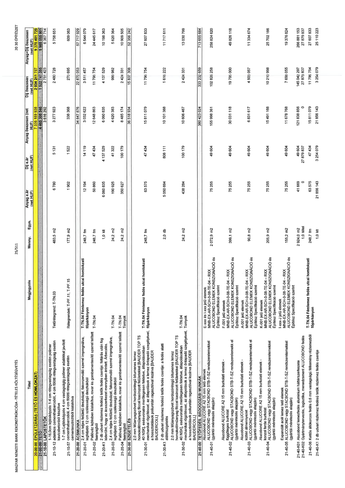

| Tétel | Megjegyzés | Menny. | Egys. | Anyag e.ár (net HUF) | Díj e.ár (net HUF) | Anyag összesen (net HUF) | Díj összesen (net HUF) | Anyag+Díj összesen (net HUF) |
|---|---|---|---|---|---|---|---|---|
| 21-00-01 ÉPÜLETVÁZAS (TETŐ ÉS HOMLOKZAT) | NaN | NaN | NaN | 0 | 0 | 335 159 938 | 66 241 787 | 401 401 725 |
| 21-00 LAPOSTETŐK | NaN | NaN | NaN | 0 | 0 | 4 465 308 546 | 1 522 747 355 | 5 988 055 901 |
| 21-10-07 1-16,0cm lejtésképzés 1-4 cm rétegvastagság esetén polimer adalékkal javított cementhabarcsból, 4 cm fölötti rétegvastagság esetén kavicsbetonból készítve | Tetőrétegrend: T-TN-03 | 483,5 | m2 | 6 780 | 5 131 | 3 278 130 | 2 480 839 | 5 758 969 |
| 21-10-57 1-7 cm Lejtésképzés 4 cm vastagságig polimer adalékkal javított cementhabarcsból, 4 cm fölötti rétegvastagság esetén kavicsbetonból készítve | Rétegrendek: T-PF-11, T-PF-15 | 177,9 | m2 | 1 902 | 1 522 | 338 366 | 270 695 | 609 061 |
| 21-00-01 ACSMUNKÁK | NaN | NaN | NaN | 0 | 0 | 34 847 876 | 22 870 053 | 57 717 929 |
| 21-00-01 2,4 cm teljes felületű deszkázat, faonzerváló szerrel impregnálva, legfeljebb 12 cm szélességű deszkákból | T-TN-04 Fémlemez fedés utcai homlokzati főpárkányon | 248,7 | fm | 12 194 | 14 119 | 3 032 622 | 3 511 457 | 6 544 079 |
| 21-20-02 Pallóváz fejlesztésen készült rovar, rovar és gombamentesítő szerrel telített fenyőfa fűrészáruból | T-TN-04 | 248,7 | fm | 50 860 | 47 434 | 12 648 883 | 11 796 754 | 24 445 637 |
| 21-20-01 2 db udvari rézlemezes tetők fedés cseréje; feltárás után fog kiderülni, hogy az ácsszerkezet mennyiben érintett. Árbecslés. | NaN | 1,0 | klt | 6 080 835 | 4 137 529 | 6 080 835 | 4 137 529 | 10 218 363 |
| 21-20-03 2,4 cm teljes felületű deszkázat, faonzerváló szerrel impregnálva, gombamentesítő szerrel telített fenyőfa fűrészáruból | T-TN-04 | 24,2 | m2 | 190 925 | 41 322 | 4 620 383 | 999 982 | 5 620 364 |
| 21-20-04 Pallóváz fejlesztésen készült rovar és gombamentesítő szerrel telített fenyőfa fűrészáruból | T-TN-04 Tornyok | 24,2 | m2 | 350 627 | 100 179 | 8 485 174 | 2 424 331 | 10 909 505 |
| 21-00 SZIGETELÉS | NaN | NaN | NaN | 0 | 0 | 36 518 934 | 15 837 308 | 52 356 242 |
| 21-30-01 2,0 mm Műanyag-szövet hordozórétegű bitumenes lemez, homokolt/műanyag filccel kasírozott felületekkel [BAUDER TOP TS 40 NSK], esővíz-csatorna merőlegesen fektetve, átlapolásokban mechanikai rögzítéssel, az átlapolások a lemez öntapadó szegélyével, a hosszoldalak poliuretán ragasztóval lezárva [BAUDER PUMPKLEBER] | T-TN-04 Fémlemez fedés utcai homlokzati főpárkányon | 248,7 | fm | 63 575 | 47 434 | 15 811 079 | 11 796 754 | 27 607 833 |
| 21-30-01 2 db udvari rézlemezes tetők fedés cseréje; a fedés alatti alátétszigetelés | NaN | 2,0 | db | 5 050 694 | 808 111 | 10 101 388 | 1 616 222 | 11 717 611 |
| 21-30-02 2,0 mm Műanyag-szövet hordozórétegű bitumenes lemez, homokolt/műanyag filccel kasírozott felületekkel [BAUDER TOP TS 40 NSK], esővíz-csatorna merőlegesen fektetve, átlapolásokban mechanikai rögzítéssel, az átlapolások a lemez öntapadó szegélyével, a hosszoldalak poliuretán ragasztóval lezárva [BAUDER PUMPKLEBER] | T-TN-04 Tornyok | 24,2 | m2 | 438 284 | 100 179 | 10 606 467 | 2 424 331 | 13 030 799 |
| 21-30 BÁDOGOZÁSI MUNKÁK | NaN | NaN | NaN | 0 | 0 | 380 423 024 | 333 232 659 | 713 655 684 |
| 21-40-01 Alucobond ALUCORE A2 15 mm burkolati elemek - függőleges burkolat (gyártói méretezés alapján) | E-xxx és I-xxx jelű elemek MNB-EX-AR-SCH-0-08-TE-04 - RXX ALUCOBOND ELEMEK KONSZIGNÁCIÓ és Építész Specifikáció szerint | 2 072,9 | m2 | 75 255 | 49 604 | 155 998 361 | 102 826 258 | 258 824 620 |
| 21-40-02 Alucobond ALUCORE A2 15 mm burkolati elemek - MNB-EX-AR-SCH-0-08-TE-04 - RXX ALUCOBOND ELEMEK KONSZIGNÁCIÓ és Építész Specifikáció szerint (gyártói méretezés alapján) | kültéri álmennyezet | 399,1 | m2 | 75 255 | 49 604 | 30 031 118 | 19 797 000 | 49 828 118 |
| 21-40-03 Alucobond ALUCORE A2 15 mm burkolati elemek - MNB-EX-AR-SCH-0-08-TE-04 - RXX ALUCOBOND ELEMEK KONSZIGNÁCIÓ és Építész Specifikáció szerint (gyártói méretezés alapján) | K-001 jelű elemek MNB-EX-AR-SCH-0-08-TE-04 - RXX ALUCOBOND ELEMEK KONSZIGNÁCIÓ és Építész Specifikáció szerint | 90,8 | m2 | 75 255 | 49 604 | 6 831 617 | 4 504 057 | 11 335 674 |
| 21-40-04 Alucobond ALUCORE A2 15 mm burkolati elemek - MNB-EX-AR-SCH-0-08-TE-04 - RXX ALUCOBOND ELEMEK KONSZIGNÁCIÓ és Építész Specifikáció szerint (gyártói méretezés alapján) | I-xxx-J jelű elemek MNB-EX-AR-SCH-0-08-TE-04 - RXX ALUCOBOND ELEMEK KONSZIGNÁCIÓ és Építész Specifikáció szerint | 205,9 | m2 | 75 255 | 49 604 | 15 491 168 | 10 210 998 | 25 702 166 |
| 21-40-05 Expandált acél lemez tető elemek (gyártói méretezés alapján) | NaN | 155,2 | m2 | 75 255 | 49 604 | 11 678 768 | 7 698 055 | 19 376 824 |
| 21-40-K01 Alucobond lemezelés alumínium háttérszerkezete | NaN | 2 924,0 | m2 | 41 669 | 49 604 | 121 838 856 | 145 042 297 | 266 881 153 |
| 21-40-K02 Gyártmánytervezés, logisztika, méretre szabás, alumínium ALUCOBOND fedés (gyártói méretezés alapján) | NaN | 1,0 | tétel | 0 | 27 879 837 | 0 | 27 879 837 | 27 879 837 |
| 21-40-06 Kettős állókorcos fedés 0,6 mm vastagságú félkemény rézlemezből | T-TN-04 Fémlemez fedés utcai homlokzati főpárkányon | 248,7 | fm | 63 575 | 47 434 | 15 811 079 | 11 796 754 | 27 607 833 |
| 21-40-K2 2 db udvari rézlemezes tetők fedés cseréje | NaN | 1,0 | klt | 21 856 143 | 3 254 079 | 21 856 143 | 3 254 079 | 25 110 223 |
